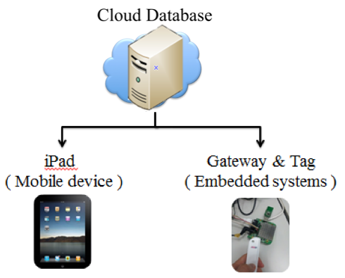
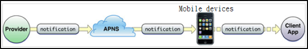

CatchUp
A cloud platform for taking meeting minutes

Project Background: CEECS Special Projects Competition, College of Electrical Engineering & Computer Science, NCU
Project supervisor: Dr. Shiann-Tsong Sheu
Awards: First Prize and Most Popular Project Prize
Objective
Reduce paper usage during meetings and developed a work productivity platform
Achievement
Developed innovative work productivity platform that integrated hardware and software, implementing many novel features like tagging important messages in the chat and adding tasks into group schedules. At that time, even LINE and WhatsApp, instant messaging applications, lacked such features.
Scenario
When users are in the same Access Point or they use a tag and a gateway to mark themselves as being in the same place, they can select members and form a group; members could then take meeting minutes, send and receive messages, track members’ location, transfer files, and add tasks to the team schedule.
Architecture Design
Integrated smart mobile devices, embedded system (RTL 8196c), and cloud database.
Implemented server through PHP+MySQL.
Designed relational database.
Sending notifications of meeting via APNS
User Interface
Three modules